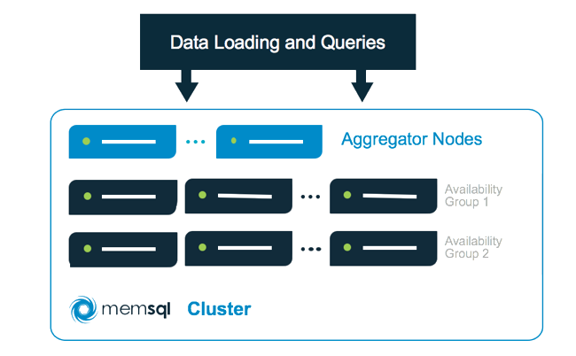

This guide covers writing SQL that is optimized for MemSQL’s distributed system.
MemSQL, even in a distributed environment, makes it extremely easy to query your
data with a well-understood set of performance tradeoffs involving Data Definition
Language (DDL) and Data Manipulation Language (DML) query design.
Most of the traditional tradeoffs still apply– indexes still speed up seeks and
sorts, distinct aggregates are slower than simple aggregates, etc. However, in
a sharded distributed system, an advanced SQL user must take into account data
partitioning as well. This guide will walk you through how to tune your distributed
DDL and DML to perform well in MemSQL’s distributed system. This guide is not about
clustering features or high availability (see Managing High Availability) but
instead focuses on query execution.
Query Execution Architecture
MemSQL is a two-tiered architecture consisting of aggregators and leaves. Aggregators can be thought
of as load balancers or network proxies, through which SQL clients interact with the cluster. The only data
they store is metadata about the machines in the cluster and the partitioning of the data. The leaves
function as storage and compute nodes.

As a user, you interact with an aggregator as if it were “the” database, running queries and updating data
as normal via SQL commands. Under the hood the aggregator queries the leaves, aggregates intermediate results
(hence the name), and sends results back to the client. All of the communication between aggregators and
leaves for query execution is also implemented as SQL statements.
Data is sharded across the leaves into partitions. Each partition is a database on a leaf
(named <dbname>_N) with a slice of each table’s data. By default, MemSQL will create one partition per CPU
core on the leaves for maximum parallelism. This number is configurable cluster-wide with the
default-partitions-per-leaf variable, or as an optional parameter to CREATE DATABASE.
In the context of query execution, a partition is the granular unit of query parallelism. In
other words, every parallel query is run with a level of parallelism equal to the number of
partitions. You can view the partitions in a database with SHOW PARTITIONS.
MemSQL also has the notion of reference tables. These tables are replicated in full to every
machine in the cluster -every aggregator and every leaf- and are assumed to be relatively
small. The ubiquity of reference tables makes them cheap to join against, but have some limitations. See
Reference Tables for more details on their implementation. Distributed DML below
discusses how to use them in query execution.
Distributed DDL
Traditionally, a schema designer must consider how to lay out columns, types, and indexes
in a table. Many of these considerations still apply to a distributed system, with a
few new concepts.
Every distributed table has exactly one shard key, or shard index. This functions like a normal
table index, and can contain any number of columns. This key also determines which partition a given row
belongs to, using consistent hashing.
When you run an INSERT query, the aggregator computes the hash value of the values in the column or columns that make up the shard key, does a modulo operation to get a partition number, and directs the INSERT query to the appropriate partition on a leaf machine.
The only guarantee that you have about the physical location of data in the system is
that any two rows with the same shard key value are guaranteed to be on the same partition.
Note
MemSQL requires that any PRIMARY or UNIQUE index must
be identical to or a superset of the shard key. Rows which might have a primary key conflict
must map to the same partition in order for uniqueness to be enforced.
MemSQL’s distributed query optimizer leverages shard keys to determine how a read query
should be executed. For example, queries that fully match the shard key can be routed
directly to a single partition on a single leaf server. Queries that are guaranteed to
be non-overlapping can be streamed without any processing on the aggregator or leaf-to-leaf temporary tables.
These optimizations are discussed in depth in Distributed DML.
MemSQL supports three types of shard keys:
Primary Key as the Shard Key
If you create a table with a primary key and no explicit shard key, the PK will be used as
the shard key by default. This helps avoid data skew.
CREATE TABLE clicks (
click_id BIGINT AUTO_INCREMENT PRIMARY KEY,
user_id INT,
page_id INT,
ts TIMESTAMP
);
Non-Unique Shard Key
The syntax for a non-unique shard key is SHARD KEY (col1, col2, ...). For example:
CREATE TABLE clicks (
click_id BIGINT AUTO_INCREMENT,
user_id INT,
page_id INT,
ts TIMESTAMP,
SHARD KEY (user_id),
PRIMARY KEY (click_id, user_id)
);
In this example, any two clicks by the same user will be guaranteed to be on the same partition. You can take advantage of this
property in query execution for efficient COUNT(DISTINCT user_id) queries, which knows that
any two equal (non-distinct) user_id values will never be on different partitions.
Note that even though click_id will be unique, we still have to include user_id in the primary key.
Note
MemSQL supports a variant of the shard key called the “foreign shard key” which explicitly references the shard key of another table. In MemSQL up through version 3.2 this FSK relationship was required for distributed joins. As of version 4 the syntax is still supported, but no longer required.
Distributed DML
How a table is partitioned affects the performance of some kinds of SELECT queries. In this section we’ll
look at common query patterns and how they’re executed through the distributed system. You can use the EXPLAIN
command to examine a query’s aggregator-level and leaf-level query plans.
Let’s assume the following schema:
CREATE TABLE a (
a1 int,
a2 int,
a3 int,
SHARD KEY (a1, a2),
KEY (a3)
);
CREATE TABLE b (
b1 int,
b2 int,
b3 int,
SHARD KEY (b1, b2)
);
CREATE REFERENCE TABLE r (
r1 int,
r2 int,
PRIMARY KEY (r1),
KEY (r2)
);
Index Matching
Matching the Shard Key. If you specify an equality on every column in the shard key, then the aggregator will direct the query
to exactly one partition. Most queries do not fall into this pattern; instead, the aggregator must send queries to every partition
in the cluster for intermediate results and then stitch them together.
These queries are sent to one partition:
SELECT * FROM a WHERE a1 = 4 AND a2 = 10;
SELECT a3, count(*) FROM a WHERE a1 = 4 AND a2 = 10 GROUP BY a3;
These queries are sent to all partitions:
SELECT * FROM a WHERE a1 = 4;
SELECT * FROM a WHERE a1 = 4 OR a2 = 10;
SELECT * FROM a WHERE a1 IN (4, 5) AND a2 IN (10);
Secondary Index Matching. If your query uses a secondary (non-shard) index, then the aggregator must send the query to every partition
in the cluster. Locally, each partition’s table will use its part of the secondary index to speed up the query. While the overall performance of the query is
dictated by the seek and scan time of these indexes, the fact that the query must be sent everywhere in the cluster can increase the
variance (and therefore overall latency) of the query.
This query matches the secondary index on the column a3:
SELECT * FROM a WHERE a3 = 5;
No Index Matching. Queries that do not match any index perform a full table scan on all partitions. From the perspective of the
aggregator, these queries are the same as queries that match a secondary index.
Aggregator Merging
Most queries that don’t involve aggregates, group bys, or order bys don’t require any further processing on the aggregator. These
queries are forwarded verbatim to one or many partitions, and the partition’s results are streamed back to the client.
More complex queries do require merge processing on the aggregator.
Order By. ORDER BY queries that don’t involve aggregates or group bys can sort rows on the leaves and then merge the sorted
intermediate results on the aggregator. For example, a query like SELECT * FROM a WHERE a3 = 5 ORDER BY a1 will follow this pattern.
These queries leverage distributed (leaf) processing to do the majority of filtering and sorting, which makes them scalable with the
amount of data in the system.
Aggregates. Queries with aggregates compute aggregate values on the leaves and then use aggregate merging on the aggregator to
compute a final result. Each aggregate is either assumed to be associative or converted into an expression that is associative. For
example, AVG(expr) is converted to SUM(expr)/COUNT(expr) automatically by the aggregator.
Distinct Aggregates. Distinct aggregates like COUNT(DISTINCT ...) are not as efficient as simple aggregates like COUNT(*).
Distinct values must be resolved across partition boundaries (you could have a3=10 on two different partitions in SELECT COUNT(DISTINCT a3) FROM a), so each
partition must send every distinct value it has back to the aggregator. Queries with distinct aggregates ship one row per
distinct value per partition back to the aggregator and can therefore be expensive if there are a lot of distinct values.
There is an exception to this rule: if you run a DISTINCT aggregate over the shard key, distinct values can
be resolved on the leaves and the aggregator can merge aggregate values as it would with simple aggregates. An example of such a
query would be SELECT COUNT(DISTINCT a1, a2) FROM a.
Note
It is also possible to calculate a fast approximation of distinct values; see APPROX_COUNT_DISTINCT.
Group By. GROUP BY queries are spread very efficiently across the leaves. The aggregator sends the GROUP BY construct
to the leaves so that the leaves process data down to the size of the final, grouped result set. The aggregator then merges together
these grouped results (combining aggregates along the way) and sends the final result back to the client. The efficiency of a distributed
GROUP BY query is inversely proportional to the number of rows in the final result set, since the traffic through the system
is roughly the number of partitions multiplied by the size of the grouped result set.
Having. HAVING clauses are processed entirely on the aggregator since they perform filtering after the GROUP BY operation
is complete.
Distributed Joins
Reference Joins. As a general rule, MemSQL will efficiently execute any join query with a single sharded table and
as many reference tables as you’d like. Since reference tables are fully replicated to on every machine in the cluster, leaves can
join against their their local copies of reference tables.
These queries leverage reference joins:
SELECT * FROM a INNER JOIN r ON a.a1 = r.r1;
SELECT * FROM r LEFT JOIN a ON a.a1 = r.r1;
SELECT * FROM a, r r1, r r2, r r3;
SELECT * FROM a INNER JOIN
(SELECT DISTINCT r1 FROM r) x
ON a.a1 = x.c;
Aligning Shard Keys For Performance: Alinging the shard keys of various large tables enables more efficient joining. Starting with MemSQL 4 it is possible to perform arbitrary distributed joins across any tables and along any column. However, if you join two tables with identical shard key signatures along that shard key, the joins will be performed local to the partitions, reducing network overhead.
CREATE TABLE users (
id BIGINT AUTO_INCREMENT,
user_name VARCHAR(1000),
account_id BIGINT,
PRIMARY KEY (id)
);
CREATE TABLE clicks (
click_id BIGINT AUTO_INCREMENT,
account_id BIGINT,
user_id BIGINT,
page_id INT,
ts TIMESTAMP,
SHARD KEY (user_id),
PRIMARY KEY (click_id, user_id)
);
In this example, id is be the shard key of the users table, and the shard key on the clicks table has the same signature (a single BIGINT). These queries join locally without network overhead:
SELECT * FROM users INNER JOIN clicks ON users.id = clicks.user_id WHERE clicks.page_id = 10;
SELECT avg(c1.t - c2.t) FROM clicks c1 INNER JOIN clicks c2 ON c1.user_id = c2.user_id WHERE c1.page_id > c2.page_id;
Whereas this query will stream rows between leaves:
SELECT u.account_id, count(distinct user_id), count(1)
FROM users u INNER JOIN clicks c ON u.account_id = c.account_id
GROUP BY u.account_id;
If you identify your data layout and join patterns in advance, this technique can be an extremely effective way to run performant
joins between distributed tables. For more information about how queries execute, see EXPLAIN.
Write Queries
Updates and Deletes. The WHERE clause in an UPDATE or DELETE query is optimized the same way as the WHERE clause in a SELECT query.
If the predicate matches the shard key exactly then the query is routed to a single partition, etc.
Inserts. MemSQL executes INSERT queries by analyzing the insert values relevant to the shard key and routing the query
to the corresponding partition. For example, INSERT INTO a (a1, a2, a3) VALUES (1, 2, 3) would compute the hash value of
(1, 2) and map this value to the appropriate partition.
If you’re bulk inserting data with INSERT queries, then you should take advantage of the multi-insert syntax:
INSERT INTO a (a1, a2, a3) VALUES (1, 2, 3), (2, 3, 4), .... The aggregator will chop up the multi-insert into single insert
queries and run them in parallel across the cluster. This technique enables your application to combat the inherent latency of
running in a distributed system.
Currently, in the event of a rollback (duplicate key error, out-of-memory, etc.), the aggregator will not roll back any successful
tuples in the multi-insert query. This is in contrast to the single-box system, which will treat a multi-insert as one large transaction.